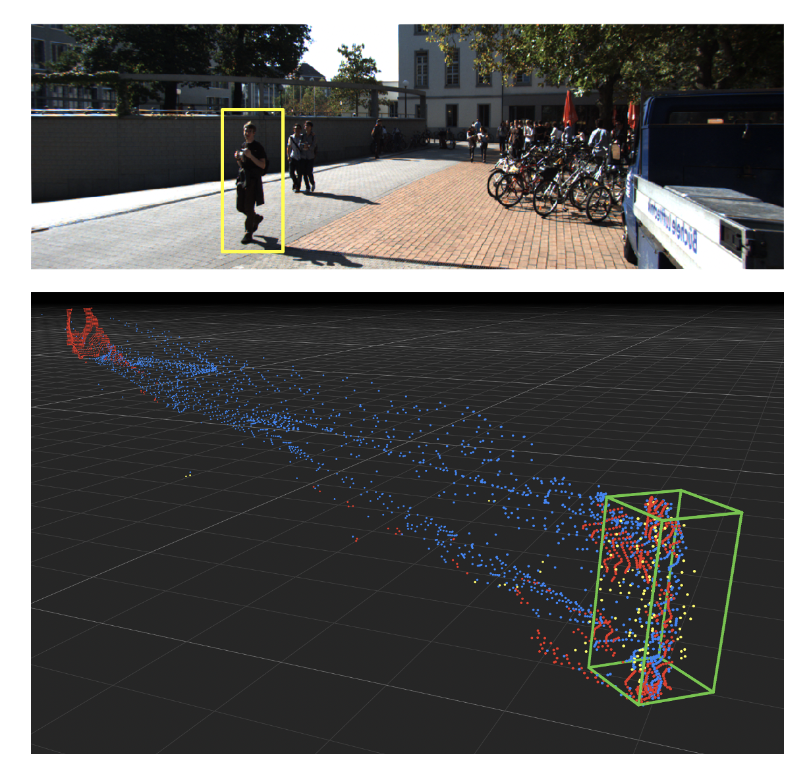

Wasserstein Distances for Stereo Disparity Estimation
|
In NeurIPS 2020 (Spotlight)
|

|
|
Example: Person in front of a wall. Input image and output 3D points from our method (CDN) and baseline with the person inside the groundtruth box.
|
Abstract
Existing approaches to depth or disparity estimation output a distribution over a set of pre-defined discrete values. This leads to inaccurate results when the true depth or disparity does not match any of these values. The fact that this distribution is usually learned indirectly through a regression loss causes further problems in ambiguous regions around object boundaries. We address these issues using a new neural network architecture that is capable of outputting arbitrary depth values, and a new loss function that is derived from the Wasserstein distance between the true and the predicted distributions. We validate our approach on a variety of tasks, including stereo disparity and depth estimation, and the downstream 3D object detection. Our approach drastically reduces the error in ambiguous regions, especially around object boundaries that greatly affect the localization of objects in 3D, achieving the state-of-the-art in 3D object detection for autonomous driving.
Video
|
|
|
NeurIPS Presentation 2020, also hosted on [SlidesLive]
|
Approach
[GitHub]
Results on Boundaries
We show the bird's-eye view visualization of the resulting point cloud from our method against the baseline. The green boxes are the ground-truth car/pedestrian locations. The yellow points are from the ground-truth LiDAR. Notice that our method is "streak free".
Paper
Poster
Citation
@inproceedings{div2020wstereo,
title={Wasserstein Distances for Stereo Disparity Estimation},
author={Garg, Divyansh and Wang, Yan and Hariharan, Bharath and Campbell, Mark and Weinberger, Kilian and Chao, Wei-Lun},
booktitle={NeurIPS},
year={2020}
}